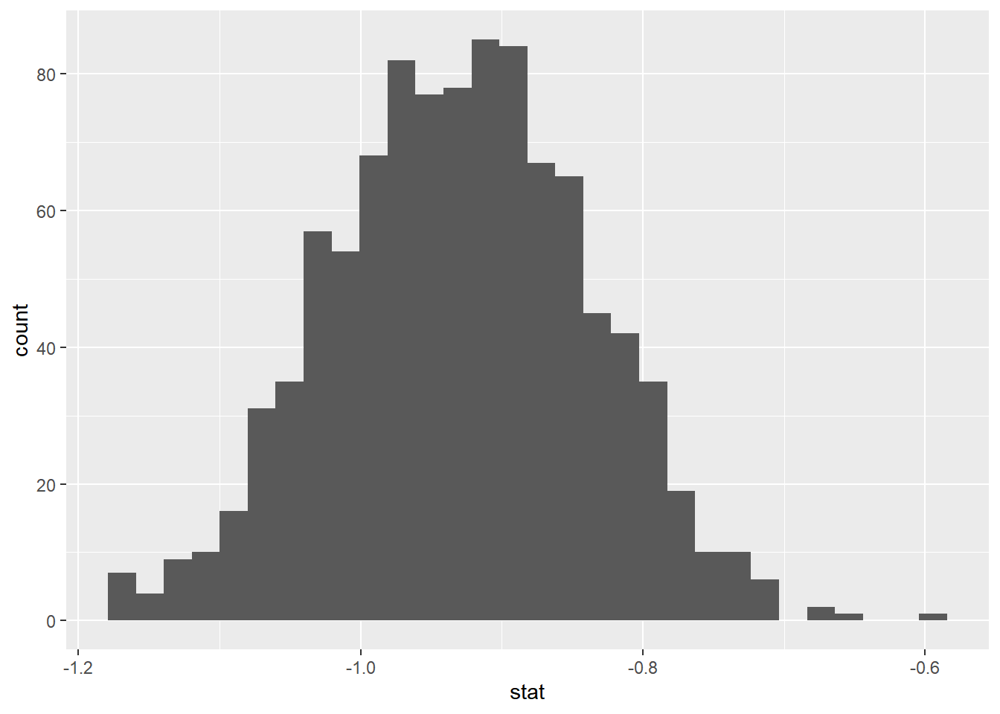

The Iris Dataset contains four features (length and width of sepals and petals) of 50 samples of three species of Iris (Iris setosa, Iris virginica and Iris versicolor). A sepal is the outer parts of the flower (often green and leaf-like) that enclose a developing bud. The petal are parts of a flower that are the pollen producing part of the flower that are often conspicuously colored. The difference between sepals and petals can be seen below.
The data were collected in 1936 at the Gaspé Peninsula, in Canada. For the first question of the exam, you will use this data sets to investigate a variety of relationships to learn more about each of these three flower species. The data set is prepackaged in R, and is called iris.
Below, we are going to use theory based + simulation techniques to calculate a confidence interval and theory based techniques to conduct a hypothesis test. Note: we are interested in the true mean sepal length between the setosa and versicolor species.
Create a data set called iris_filter that removes the species virginica. After this, check the levels for the variable Species. Is virginica still there? Let’s drop it!
The t-distribution can be used for inference when working with a quantitative response if the following conditions hold:
Independence
Large samples and no extreme outliers
Let’s first estimate what our population parameter may be.
– Write out our population parameter in proper notation (s-v)
\(\mu_s - \mu_v\)
– Next, calculate and write out our estimate. Name this value estimate. Use s-v for your order of subtraction.
#define your difference in means as your estimate belowestimate<-iris_filter|>specify(response =Sepal.Length, explanatory =Species)|>calculate(stat ="diff in means", order =c("setosa", "versicolor"))|>as.numeric()iris_filter|>group_by(Species)|>summarize(mean_diff =mean(Sepal.Length))
# A tibble: 2 × 2
Species mean_diff
<fct> <dbl>
1 setosa 5.01
2 versicolor 5.94
Let’s remind ourselves on how we calculate our confidence interval below
To do this, let’s define each piece. Let’s calculate our 95% confidence interval. Recall that we need to define our degrees of freedom! Commonly, we use min(n1-1; n2-1)
Now, interpret your confidence interval in the context of the problem.
We are 95% confident that the true mean sepal length for setosa is 0.752 to 1.107 less than the true mean sepal length for versicolor.
Bootstrap Methods
Do we expect the results to be the same for bootstrap methods? Why or why not?
Yes. There is no evidence to suggest that the CLT assumptions were violated.
Now, let’s simulate our bootstrap distribution below. Detail how one observation on this bootstrap distribution is created.
set.seed(12345)boot_dist<-iris_filter|>specify(response =Sepal.Length, explanatory =Species)|>generate(reps =1000, type ="bootstrap")|>calculate(stat ="diff in means" , order =c("setosa" , "versicolor"))boot_dist|>ggplot(aes(x =stat))+geom_histogram()
`stat_bin()` using `bins = 30`. Pick better value with `binwidth`.

Resample within replacement within each group n1 and n2 number of times. Calculate the new sample means. Take the difference. Do this process a large number of times (1000).
And finally, calculate your confidence interval here…
Now, suppose we want to test to see if there is a difference in sepal length across the two species. Let’s do this below!
Note: The confidence level is equivalent to 1 – the alpha level. So, if your significance level is 0.05, the corresponding confidence level is 95%.
In short, would we expect to reject or fail to reject our null hypothesis based on our results from our confidence interval?
Yes! 0 is not a plausible value given based on our confidence interval. At a 5% significance level, our 95% confidence interval suggests that we will reject the null hypothesis.
Steps for Hypothesis Test (Theory Based)
Steps:
Check assumptions - check
Calculate sample mean - check
Calculate SE
Use 2 & 3 to calculate t-statistic
Calculate p-value
Let’s remind ourselves what the difference in means (s - v) are below:
estimate
[1] -0.93
To “standardize our statistic”… we need to divide by the standard error. The standard error of the different in sample means can be calculated as follows:
We can calculate your t-statistic using the following formula below:
We use pt to calculate our p-value. Recall that we need to define our degrees of freedom! Commonly, we use min(n1-1; n2-1)
pt(tscore , df =49)*2#multiply by 2 for two sided test
[1] 3.63027e-14
Write an appropriate scope of inference in the context of the problem below:
Assuming that these observations of plants are a representative sample, we can conclude a difference in true mean sepal length between setosa and versicolor species at the population level. Because this is an observational study, we can infer an association between species and sepal length.